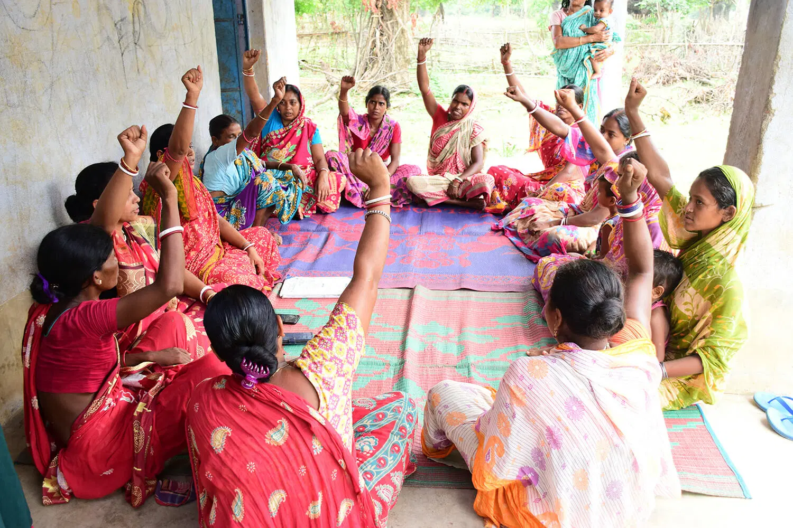

Aahar Aashirwad Expands Reach to Rural Areas
Aahar Aashirwad, a leading food donation initiative, has announced its expansion into rural areas. The initiative aims to provide meals to underserved communities, ensuring no one goes hungry.